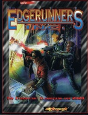

|  | Technical data |
| Supplement for the role-playing game Cyberpunk 2020, published by R. Talsorian Games (1995) | |
| Theme | Temp agencies in 2020 |
| Background quality | 4 / 5 |
| Scenario quality | 2 / 5 |
| Rules quality | - |
| Artworks quality | 3 / 5 |
| Writing quality | 5 / 5 |
I am still doubtful about the usefulness of this supplement, which claims to be inspired by Tales from the Forlorn Hope and proposes a corporation that plays the role of a temporary agency for cyberpunks (?!). In essence, we find the profile of the so-called "StreetTime" corporation, and the description of about thirty NPCs employed by it. Then, a series of files on some corporations using "temporary staff" is attached to a series of contract proposals. It's a bit like ManPower of gunslingers, and it's quite well done, even if one can wonder about the legality of mercenarism in 2020. In my opinion, this supplement can inspire a GM that wants a fixed starting base for the PCs, a kind of basic employer while keeping a certain diversity in the action. It can also lead to an "A-Team" atmosphere. To be reserved for those who prefer "Your mission, should you decide to accept it..." type scenarios, and who are looking for a starting point without the PCs always being recruited in bars.
{kind=link}